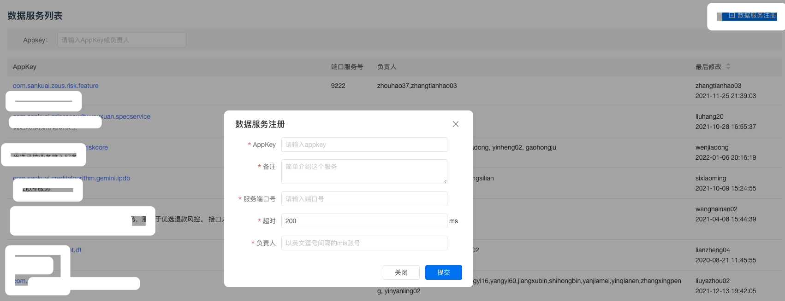
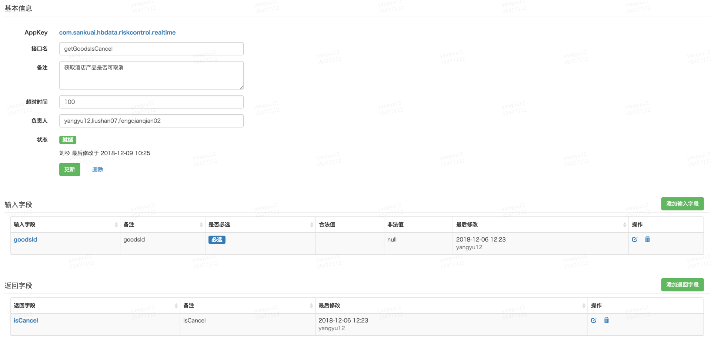
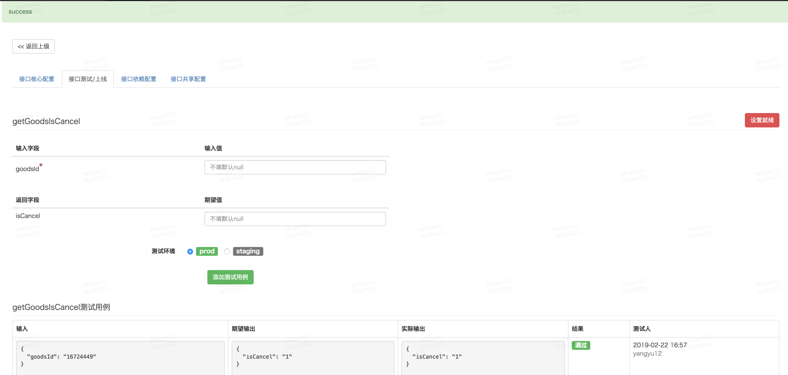

说明：外部数据应用到实时策略
一、背景
解决：需要使用第三方数据应用到实时策略中，可通过数据接口的方式在Zeus上应用；
二、操作流程
说明：业务数据对接指南（方法论说明，适合研发阅读）
Step1: 数据服务注册
Zeus线上网址：https://zeus.sankuai.com/fetcher_app/add，相关注册信息自定义
（推荐使用新版页面：https://zeus.sankuai.com/data_zeus_static/#/fetcherApp）

Step2: 数据接口注册
Zeus线上网址：https://zeus.sankuai.com/fetcher/add，相关注册信息自定义，测试通过即可，例如：
（推荐使用新版页面：https://zeus.sankuai.com/data_zeus_static/#/fetcher）


Zeus测试返回信息含义
SUCCESS(0, "success"),
METHOD_NOT_EXIST(1, "no such method"),
METHOD_NOT_ONLINE(2, "method not online"),
DATA_ACTION_ERROR(3, "fetch data error"),
DATA_EMPTY(4, "data empty"),
METHOD_CONFIG_ERROR(5, "method config error"),
DATA_ACTION_CONFIG_ERROR(6, "data action config error"),
UNKNOWN_ERROR(-1, "unknown error");
Zeus测试返回“no such method”，尝试重新配置下MCC，稍等再重试
其他错误一般为配置错误，检查配置即可
Step3: Zeus配置参数-数据接口映射关系
Zeus线上网址：https://zeus.sankuai.com/param/add_fetcher_dependent，相关信息自定义，例如